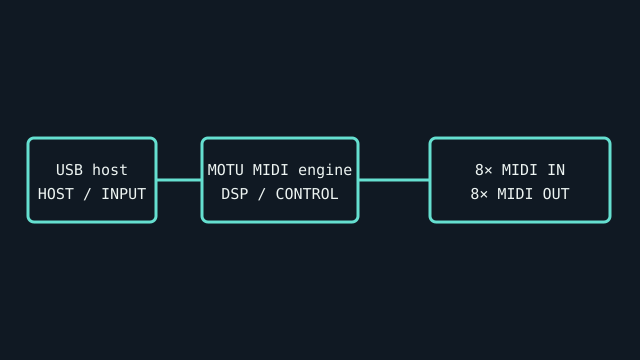

[ INDIVIDUAL COMPONENT // SOUND HARDWARE ]
MOTU MIDI Express 128
Rackable USB MIDI interface with eight independent MIDI inputs and eight outputs. It carries MIDI data and provides no audio converter or audio interface.

IDENTIFICATION: Match the complete printed model, revision, bundled breakout, and accessory markings. Specs below describe this named model; family-level variants are not assumed interchangeable.
Specifications
| Catalog subcategory | MIDI interfaces |
|---|---|
| Product ID | MOTU MIDI Express 128 USB MIDI interface |
| Bus / host | USB host interface; refer to the Express 128 manual and actual accessory package for power requirements. Do not presume the unit operates standalone. |
| Connectors and I/O | Eight 5-pin DIN MIDI IN ports and eight 5-pin DIN MIDI OUT ports, giving 128 channels of MIDI. No analog audio or MIDI Thru ports are implied by the eight-port count. |
| Chipset / conversion / protocol | MIDI interface only; no audio ADC/DAC. MOTU MIDI Time Stamping and multi-client behavior depend on OS/driver. It does not operate standalone without a host. |
| Drivers / operating systems | MOTU provides Mac Core MIDI and Windows drivers/software; current OS compatibility must be verified on its model download page. Do not treat it as class-compliant unless the model manual explicitly confirms that mode. |
| Variant compatibility | MIDI Express 128 is distinct from MIDI Express XT and Micro Express; verify eight physical inputs and outputs on the chassis. Check USB connection and supplied power/host arrangement per manual. |
Service & preservation
Inventory all 16 DIN ports and label connected instruments before moving a rack. Preserve USB/driver version and routing map; inspect DIN sockets, chassis, and power/USB connections. Test each port independently because a failed cable can mimic interface failure.
Identification and compatibility checks
- Photograph the product/model label, board silkscreen/revision, connector faces, cable assemblies, and accessory part numbers before installation.
- Check electrical bus and host slot or USB/MIDI protocol support against the exact manual; connector shape alone does not establish compatibility.
- For analog I/O, confirm line/mic/instrument level, phantom-power behavior, channel map, and direction from the model-specific documentation before connecting equipment.
- When software or driver support is uncertain, preserve the last known-good installer and document tested host OS, driver version, and device identifier.
Primary manufacturer & standards sources
- MOTU MIDI Express 128 official product pageManufacturer page identifies the 8-in/8-out interface and host configuration.
- MOTU USB MIDI Interface User GuideManufacturer manual covers USB MIDI interface configuration and operation.
- MOTU official downloadsCheck the MIDI Express 128 model-specific driver/software and OS release notes.
Source selection is model-specific where an original manual or vendor product/support page exists. Archived scans preserve manufacturer documentation; operating-system claims are limited to what the cited product/manual materials identify.